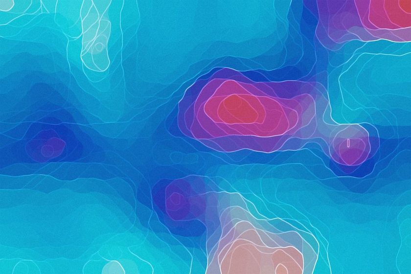

Legends Are Arguments
A legend claims to be a neutral key. Read closely, it's the cartographer telling you what mattered enough to symbolize.

Unfold a paper map at a trailhead kiosk and your eye probably goes to the legend first, the small boxed grid tucked in a corner that promises to explain everything else on the sheet. It reads like a glossary: a symbol, a dash, a word. But no legend lists everything a landscape contains, and none was ever meant to. Somewhere between the surveyor's field notes and the printer's plate, a person or a small committee decided which few dozen features, out of a possible several thousand, earned a dedicated mark, which got folded into a vague catch-all category, and which simply never made the cut. That short list in the corner is not a translation of the terrain. It is a ranking, printed in a box small enough that most readers never question its authority.
The Key Is Not a Glossary
Call it a legend, a key, or an explanation panel — the framing is always the same. It sits apart from the map body, boxed and orderly, borrowing the visual language of a dictionary entry. That framing does real work. A dictionary implies completeness: every word you might need is presumably in there somewhere. A legend borrows that implied completeness without earning it. It shows you what the symbols on this particular sheet mean, but says nothing about the hundred decisions that preceded printing — the features that were surveyed and then quietly dropped because the publisher judged them irrelevant to the sheet's purpose, or too dense to render at the chosen scale, or simply outside the house style someone drew up years earlier.
The closest comparison isn't a dictionary. It's a table of contents someone wrote before finishing the book. Whatever appears at the top got there because an editor decided it was the argument worth leading with.
What Earns an Icon, and What Gets Folded Into "Other"
Look at any printed legend and you'll notice the categories aren't evenly weighted. Roads usually get several distinct line weights — highway, secondary, unimproved, trail — because road hierarchy is central to how most maps expect to be used. Water gets its own careful treatment: perennial stream, intermittent stream, spring, well. Somewhere further down, often in smaller type, sits a single generic symbol for "other point of interest," standing in for everything from a historical marker to a fire lookout to a site the mapmaker didn't have a stock icon for. That single catch-all glyph is doing more compression than any other line in the box, and it's the line most readers skip past without noticing what it's absorbing.
This is where line symbols and point symbols start to reveal their own separate logic. A line symbol describes something continuous and structural — a road, a boundary, a ridge. A point symbol marks something the cartographer judged worth stopping at. The decision to render a feature as a full line versus a single dot versus nothing at all is never neutral; it's a judgment about how much of the reader's attention that feature deserves.
A legend does not describe the land. It describes what the mapmaker was willing to spend ink defending.
Field notebook, Contourline
Order on the Page Is a Ranking
Sequence matters as much as inclusion. Most legends read top to bottom in a rough order of institutional priority: transportation first, then administrative boundaries, then hydrography, then vegetation or land cover, then miscellaneous points. That order isn't alphabetical, and it isn't random. It mirrors the order a reader is expected to care about things, which is really the order the publishing agency has decided a reader should care about things. Move boundaries to the top of a legend and you've quietly told the reader that jurisdiction matters more than terrain. Move trail difficulty to the top and you've told a different, equally deliberate story.
Two Legends, One Piece of Ground
The contrast holds across map families generally, not just between agency and commercial products. Each type of map opens its legend with whatever its intended reader is assumed to need most urgently, and buries or drops whatever that reader is assumed not to be asking about.
| Map type | Legend leads with | Usually buried or omitted | Implied priority |
|---|---|---|---|
| Topographic survey sheet | Contour interval, elevation benchmarks | Businesses, seasonal facility hours | Ground form over convenience |
| Commercial trail map | Route difficulty color, junction numbers | Precise elevation, magnetic declination | Route logistics over survey accuracy |
| Nautical chart | Depth soundings, navigation hazards | Inland roads, town layout | Safety of passage over land context |
| Visitor city map | Landmarks, lodging clusters | Utility lines, parcel boundaries | Visitor experience over civic detail |
The Legend's Author Is Never Named
Part of what lets a legend pass as neutral is that nobody signs it. A byline appears on the article version of this argument; almost no legend carries one. The categories, the ordering, the line weights — these usually come from a style guide drafted years earlier by a committee inside a surveying agency or a cartography house, revised occasionally, rarely revisited from first principles. The individuals who set those conventions are anonymous by the time the map reaches a reader's hands, and the conventions themselves outlive the reasoning that produced them. That's a close cousin to the choice covered in what generalization erases at the level of the whole map: a decision made once, upstream, that keeps shaping every sheet printed from that template afterward, long after anyone remembers why the rule exists.
A few habits make the legend easier to read for what it actually is:
- Count the categories. A legend with eleven road types and one generic "point of interest" symbol is telling you something about its own priorities.
- Notice what's first. The top line usually reflects the map's primary assumed use.
- Check what's absorbed into "other" or "miscellaneous." That's often the most compressed category on the page.
- Look for the edition date. Legends age; a symbol set drafted decades ago may still be governing a current print run.
- Find the publisher. An agency legend and a tourism-board legend of the same area rarely agree on what deserves a symbol.
Reading the Legend as a Thesis Statement
Treat the legend the way you'd treat the opening paragraph of an essay: not decoration, but a compressed statement of what the rest of the document is going to argue. Read it before the terrain, not after. Note what's given a dedicated symbol, what's demoted to a shared catch-all, and what never appears at all. None of that is an accident of space. It's the clearest, most honest place on the sheet to see what the mapmaker decided was worth defending in ink.